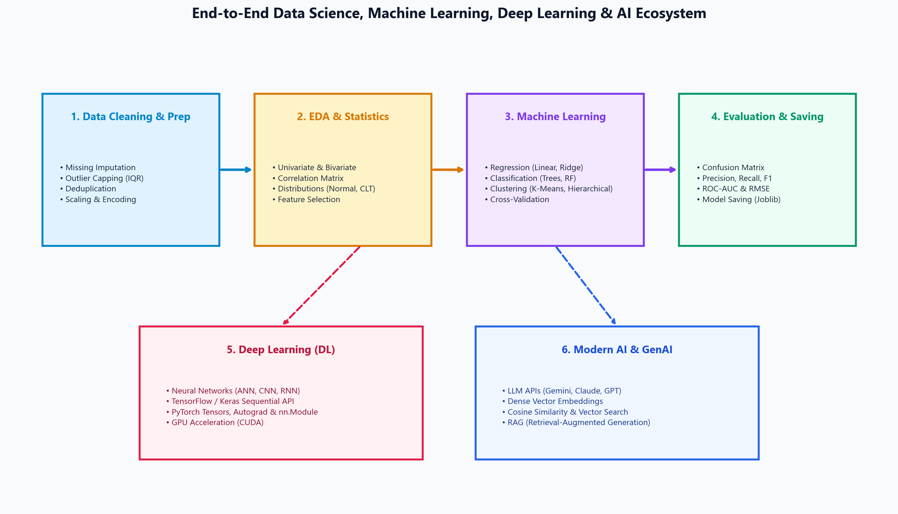

Jupyter Notebook - Part 7: Data Science and Machine Learning
मशीन लर्निंग और मॉडर्न एआई का सबसे महत्वपूर्ण एवं व्यापक मास्टर गाइड: Data Cleaning, Statistical Analysis, EDA, Probability, Scikit-learn Pipelines, Regression, Classification, Clustering, Model Evaluation & Persistence, Deep Learning (TensorFlow/PyTorch) तथा Generative AI & LLM Embeddings।

Chapter 60: Data Cleaning (डेटा शोधन: Missing Values, Duplicates, Outliers)
अध्याय 60मशीन लर्निंग का मूलभूत नियम है: "Garbage In, Garbage Out" (कचरा इनपुट = कचरा परिणाम)। यदि डेटा अशुद्ध है, तो दुनिया का सबसे बेहतरीन एल्गोरिदम भी गलत परिणाम देगा।
60.1 Handling Missing Values (अनुपस्थित मान)
- पहचान:
df.isna().sum()याdf.isna().mean() * 100(प्रतिशत मिसिंग)। - हटाने का नियम (Dropping): केवल तब ड्रॉप करें जब टारगेट वेरिएबल ($y$) गायब हो या रो स्कीमा से मेल न खाती हो। डेटा को सुरक्षित रखना (Impute करना) हमेशा प्राथमिकता होनी चाहिए।
- इम्प्यूटेशन रणनीतियाँ (Imputation Strategies):
- संख्यात्मक डेटा:
SimpleImputer(strategy='median')(आउटलायर्स के प्रति रोबस्ट)। - कैटेगरीकल डेटा:
SimpleImputer(strategy='most_frequent')(Mode)। - मिसिंग इंडिकेटर: क्या कोई मान मिसिंग था, इसका बाइनरी फ्लैग बनाना (
df['age_nan'] = df['age'].isna().astype(int))।
- संख्यात्मक डेटा:
60.2 Handling Duplicates (डुप्लिकेट्स हटाना)
# डुप्लिकेट्स गिनना व हटाना
print("डुप्लिकेट पंक्तियाँ:", df.duplicated().sum())
df.drop_duplicates(keep='first', inplace=True)60.3 Outlier Detection & Treatment (आउटलायर्स का पता लगाना व उपचार)
IQR (Interquartile Range) विधि: यह सबसे लोकप्रिय गैर-पैरामीट्रिक विधि है:
Q1 = df['income'].quantile(0.25)
Q3 = df['income'].quantile(0.75)
IQR = Q3 - Q1
lower_bound = Q1 - 1.5 * IQR
upper_bound = Q3 + 1.5 * IQR
# आउटलायर्स को हटाने के बजाय कैप (Winsorize) करना अधिक सुरक्षित होता है:
df['income_clean'] = df['income'].clip(lower=lower_bound, upper=upper_bound)Chapter 61: Data Analysis (उन्नत फ़िल्टरिंग, एग्रीगेशन व सांख्यिकी)
अध्याय 6161.1 Query Method & Advanced Filtering
61.2 Multi-Level Aggregation & Pivot Tables
# Pivot Table द्वारा दो श्रेणियों के बीच औसत बैलेंस और काउंट देखना
pivot = pd.pivot_table(df_customers, values='balance', index='segment', aggfunc=['mean', 'count'])
display(pivot)Chapter 62: Exploratory Data Analysis - EDA (अन्वेषणात्मक डेटा विश्लेषण)
अध्याय 62EDA डेटा की कहानी को समझने, छिपे हुए पैटर्न्स को उजागर करने, परिकल्पनाओं की जांच करने और फीचर्स के बीच संबंधों को विज़ुअलाइज़ करने की कला है।
62.1 EDA Workflow (स्टेप-बाय-स्टेप)
- स्कीमा व डेटा विवरण: आकार (
df.shape), कॉलम टाइप्स, और मिसिंग वैल्यूज का अवलोकन। - Univariate Analysis (एकल चर विश्लेषण):
- न्यूमेरिकल: हिस्टोग्राम और बॉक्सप्लॉट द्वारा स्क्यूनेस और आउटलायर्स देखना।
- कैटेगरीकल:
countplot()द्वारा श्रेणियों का संतुलन देखना।
- Bivariate Analysis (द्वि-चरणीय विश्लेषण):
- टारगेट वेरिएबल के साथ अन्य फीचर्स का संबंध (Scatter plots, Grouped Boxplots)।
- Multivariate Analysis (बहु-चरणीय संबंध):
- Pearson ($r$) और Spearman रैंक सहसंबंध मैट्रिक्स व Correlation Heatmap।
Storytelling with Data (डेटा के साथ कहानी कहें):
सर्वोत्तम ML प्रथाओं के अनुसार, हर विज़ुअलाइज़ेशन सेल के ठीक नीचे एक मार्कडाउन सेल होना चाहिए जिसमें उस चार्ट से प्राप्त मुख्य बिजनेस इनसाइट (Insight) स्पष्ट शब्दों में लिखी हो!
Chapter 63: Statistics (सांख्यिकी: Mean, Median, Variance, Std Dev)
अध्याय 6363.1 Measures of Central Tendency (केंद्रीय प्रवृत्ति के माप)
| माप (Metric) | गणितीय सूत्र | विशेषता एवं संवेदनशीलता |
|---|---|---|
| माध्य (Mean - $\mu$) | $$\mu = \frac{\sum_{i=1}^N x_i}{N}$$ | सभी मानों का अंकगणितीय औसत। आउटलायर्स के प्रति अत्यधिक संवेदनशील होता है। |
| माध्यिका (Median) | सॉर्टेड डेटा का 50वां परसेंटाइल मान ($Q_2$) | डेटा का सटीक मध्य बिंदु। आउटलायर्स से अप्रभावित (Robust) रहता है। |
| बहुलक (Mode) | सर्वाधिक बार आने वाला मान | कैटेगरीकल (श्रेणीबद्ध) डेटा के लिए सर्वोत्तम माप। |
63.2 Measures of Dispersion (फैलाव / प्रसरण के माप)
- प्रसरण (Variance - $\sigma^2$): माध्य से दूरी के वर्गों का औसत: $$\sigma^2 = \frac{\sum (x_i - \mu)^2}{N}$$
- मानक विचलन (Standard Deviation - $\sigma$): प्रसरण का वर्गमूल ($\sigma = \sqrt{\sigma^2}$)। यह फैलाव को मूल इकाई में व्यक्त करता है।
- सैंपल बनाम पॉपुलेशन: सैंपल मानक विचलन निकालते समय स्वतंत्रता की कोटि (Degrees of Freedom) के लिए $N-1$ से भाग दिया जाता है (Bessel's Correction)।
Chapter 64: Probability & Distributions (प्रायिकता एवं वितरण)
अध्याय 6464.1 Normal (Gaussian) Distribution & The Empirical Rule
प्राकृतिक और व्यावसायिक डेटा में सबसे अधिक पाया जाने वाला वितरण Normal Distribution (घंटी के आकार का वक्र) है:
- 68-95-99.7% नियम (Empirical Rule):
- 68.2% डेटा $\mu \pm 1\sigma$ के भीतर रहता है।
- 95.4% डेटा $\mu \pm 2\sigma$ के भीतर रहता है।
- 99.7% डेटा $\mu \pm 3\sigma$ के भीतर रहता है (यही $Z > 3$ आउटलायर नियम का आधार है)।
64.2 Central Limit Theorem - CLT (केंद्रीय सीमा प्रमेय)
CLT डेटा साइंस का महा-सिद्धांत है: "चाहे मूल जनसंख्या का वितरण कैसा भी हो (Skewed, Bimodal, Uniform), यदि आप उसमें से $n \ge 30$ आकार के पर्याप्त यादृच्छिक सैंपल लेते हैं, तो उनके औसतों (Sample Means) का वितरण हमेशा एक सामान्य (Normal) वितरण बनेगा!" यह परिकल्पना परीक्षण (A/B Testing) की नींव है।
Chapter 65: Scikit-learn (मशीन लर्निंग लाइब्रेरी दर्शन)
अध्याय 65Scikit-Learn (sklearn) पायथन में क्लासिकल मशीन लर्निंग की सबसे सुव्यवस्थित और एकीकृत लाइब्रेरी है।
65.1 The Scikit-Learn Consistent API Design
- Estimators (अनुमानक):
model.fit(X_train, y_train)द्वारा डेटा से सीखते हैं। - Transformers (रूपांतरक):
scaler.fit_transform(X)द्वारा डेटा को स्केल/एनकोड करते हैं। - Predictors (भविष्यवक्ता):
model.predict(X_test)याmodel.predict_proba(X_test)द्वारा अनुमान लगाते हैं।
65.2 Building Leak-Proof ML Pipelines
डेटा लीकेज (Data Leakage) से बचने के लिए स्केलर और मॉडल को एक `Pipeline` में बांधना उद्योग मानक है:
from sklearn.pipeline import Pipeline
from sklearn.preprocessing import StandardScaler
from sklearn.linear_model import LogisticRegression
# स्केलिंग और मॉडल को एक ही पाइपलाइन में जोड़ना
pipeline = Pipeline([
('scaler', StandardScaler()),
('classifier', LogisticRegression())
])
pipeline.fit(X_train, y_train)
y_pred = pipeline.predict(X_test)Chapter 66: Regression (लीनियर एवं लॉजिस्टिक रिग्रेशन)
अध्याय 6666.1 Linear Regression (सतत मान भविष्यवाणी)
लीनियर रिग्रेशन स्वतंत्र चरों ($X$) और एक निरंतर लक्ष्य चर ($y$) के बीच रैखिक संबंध स्थापित करता है:
$$y = w_1 x_1 + w_2 x_2 + \dots + w_n x_n + b$$- लॉस फंक्शन: Mean Squared Error (MSE) जिसे OLS (Ordinary Least Squares) द्वारा न्यूनतम किया जाता है।
- नियमितीकरण (Regularization): ओवरफिटिंग से बचने के लिए:
- Ridge (L2): कोएफिशिएंट्स को शून्य के करीब सिकोड़ता है ($\lambda \sum w_i^2$)।
- Lasso (L1): कम उपयोगी फीचर्स के कोएफिशिएंट्स को पूरी तरह शून्य बनाकर Feature Selection करता है ($\lambda \sum |w_i|$)।
66.2 Logistic Regression (वर्गीकरण के लिए ऑड्स)
नाम में 'रिग्रेशन' होने के बावजूद यह एक वर्गीकरण (Classification) एल्गोरिदम है। यह इनपुट को Sigmoid Function से गुजारकर 0 और 1 के बीच संभाव्यता (Probability) में बदलता है:
$$\sigma(z) = \frac{1}{1 + e^{-z}}$$यदि $\sigma(z) \ge 0.5$, तो क्लास 1, अन्यथा क्लास 0।
Chapter 67: Classification (Decision Tree एवं Random Forest)
अध्याय 6767.1 Decision Tree (निर्णय वृक्ष)
यह डेटा को प्रश्नों की एक श्रृंखला (जैसे: "क्या Age > 30?") के आधार पर शाखाओं (Branches) में विभाजित करता है। विभाजन का निर्णय Gini Impurity या Entropy को कम करने के आधार पर होता है।
- समस्या: सिंगल डिसिजन ट्री ट्रेनिंग डेटा को रट लेता है और अत्यधिक ओवरफिट होता है।
- नियंत्रण:
max_depth=5,min_samples_split=10सेट करके प्रूनिंग (Pruning) करें।
67.2 Random Forest (एन्सेम्बल तकनीक - Bagging)
रैंडम फ़ॉरेस्ट सैकड़ों डिसिजन ट्रीज का एक समूह (Ensemble) बनाता है और उनके परिणामों का बहुमत वोट (Majority Vote) लेता है:
Chapter 68: Clustering (K-Means एवं Hierarchical क्लस्टरिंग)
अध्याय 68Clustering (असुपरवाइज़्ड लर्निंग) बिना किसी लेबल के डेटा के आंतरिक पैटर्न और समानताओं के आधार पर डेटापॉइंट्स को समूहों (Clusters) में विभाजित करता है।
68.1 K-Means Clustering
- डेटा में $K$ यादृच्छिक केंद्रबिंदु (Centroids) चुनें।
- प्रत्येक बिंदु को उसके निकटतम केंद्रबिंदु से जोड़ें (Euclidean Distance)।
- क्लस्टर के बिंदुओं का औसत लेकर नया केंद्रबिंदु निर्धारित करें।
- जब तक केंद्रबिंदु स्थिर न हो जाएं, दोहराएं।
आदर्श $K$ का चयन: Elbow Method (Inertia/WCSS वक्र) और Silhouette Score (-1 से +1) का उपयोग करें।
68.2 Hierarchical Clustering & Dendrogram
यह नीचे से ऊपर (Agglomerative) की ओर बिंदुओं को मिलाकर पेड़ों जैसी संरचना बनाता है। scipy.cluster.hierarchy.dendrogram द्वारा इसे विज़ुअलाइज़ करके क्लस्टर्स की संख्या चुनी जा सकती है।
Chapter 69: Model Evaluation (मूल्यांकन मीट्रिक्स व Confusion Matrix)
अध्याय 6969.1 Confusion Matrix की संरचना
| वास्तविक \ अनुमानित | अनुमानित Positive (1) | अनुमानित Negative (0) |
|---|---|---|
| वास्तविक Positive (1) | True Positive (TP) | False Negative (FN) - Type II Error |
| वास्तविक Negative (0) | False Positive (FP) - Type I Error | True Negative (TN) |
69.2 Core Classification Metrics
- Accuracy: $\frac{TP + TN}{\text{Total}}$ (असंतुलित डेटासेट में भ्रामक हो सकती है)।
- Precision: $\frac{TP}{TP + FP}$ (जब गलत पॉजिटिव की भारी कीमत हो, जैसे Spam Detection)।
- Recall (Sensitivity): $\frac{TP}{TP + FN}$ (जब किसी भी पॉजिटिव को छोड़ना घातक हो, जैसे कैंसर या फ्रॉड डिटेक्शन)।
- F1-Score: प्रिसिजन और रिकॉल का हरात्मक माध्य (Harmonic Mean): $$F_1 = 2 \times \frac{\text{Precision} \times \text{Recall}}{\text{Precision} + \text{Recall}}$$
69.3 Regression Metrics
- MAE (Mean Absolute Error): $\frac{1}{n} \sum |y - \hat{y}|$ (आउटलायर्स के प्रति रोबस्ट)।
- RMSE (Root Mean Squared Error): $\sqrt{\frac{1}{n} \sum (y - \hat{y})^2}$ (बड़ी गलतियों को भारी दंड देता है)।
- $R^2$ Score (Coefficient of Determination): मॉडल द्वारा समझाया गया प्रसरण अनुपात ($0$ से $1$ तक)।
Chapter 70: Model Saving (मॉडल का स्थायित्व: Pickle vs Joblib)
अध्याय 70मशीन लर्निंग मॉडल को ट्रेन करने में घंटों का समय लग सकता है। इसलिए प्रशिक्षित मॉडल को डिस्क पर बाइनरी फ़ाइल के रूप में सहेजकर प्रोडक्शन सर्वर पर लोड किया जाता है।
Pickle बनाम Joblib:
Scikit-Learn मॉडल्स और बड़े NumPy ऐरेज़ के लिए हमेशा Joblib को प्राथमिकता दें, क्योंकि यह बड़े डेटा बफ़र्स को बिना मेमोरी डुप्लिकेट किए अत्यधिक तेज़ी से सहेजता है।
Chapter 71: Deep Learning Basics (TensorFlow एवं PyTorch)
अध्याय 71जब डेटा असंरचित (Unstructured) हो जैसे छवियाँ (Images), ऑडियो, या प्राकृतिक भाषा (Text), तो पारंपरिक मशीन लर्निंग के बजाय आर्टिफिशियल न्यूरल नेटवर्क्स (Deep Learning) का उपयोग किया जाता है।
71.1 TensorFlow / Keras Sequential Model
import tensorflow as tf
from tensorflow.keras import layers, models
# न्यूरल नेटवर्क का निर्माण
model = models.Sequential([
layers.Dense(64, activation='relu', input_shape=(10,)), # इनपुट + हिडन लेयर
layers.Dropout(0.2), # ओवरफिटिंग से बचाव
layers.Dense(32, activation='relu'),
layers.Dense(1, activation='sigmoid') # बाइनरी क्लासिफिकेशन आउटपुट
])
model.compile(optimizer='adam', loss='binary_crossentropy', metrics=['accuracy'])
# model.fit(X_train, y_train, epochs=20, batch_size=32)71.2 PyTorch Fundamentals (Tensors & Autograd)
import torch
import torch.nn as nn
# GPU की उपलब्धता जांचना
device = torch.device('cuda' if torch.cuda.is_available() else 'cpu')
# PyTorch में न्यूरल नेटवर्क क्लास
class SimpleNN(nn.Module):
def __init__(self):
super().__init__()
self.fc1 = nn.Linear(10, 64)
self.relu = nn.ReLU()
self.fc2 = nn.Linear(64, 1)
self.sigmoid = nn.Sigmoid()
def forward(self, x):
return self.sigmoid(self.fc2(self.relu(self.fc1(x))))
net = SimpleNN().to(device)Chapter 72: AI Integration (LLM APIs, Embeddings & RAG)
अध्याय 72आधुनिक डेटा साइंस में केवल प्रेडिक्टिव मॉडल्स तक सीमित न रहकर Generative AI और Large Language Models (LLMs) को सीधे नोटबुक वर्कफ़्लो में एकीकृत किया जा रहा है।
72.1 Dense Vector Embeddings (वेक्टर एम्बेडिंग्स)
एम्बेडिंग्स किसी भी वाक्य, दस्तावेज़ या कोड को एक सघन संख्यात्मक वेक्टर (उदा. 768 या 1536 आयाम) में बदल देती हैं, जो उसके सिमेंटिक अर्थ (Semantic Meaning) को सुरक्षित रखता है।
72.2 RAG (Retrieval-Augmented Generation) Architecture
- डॉक्यूमेंट चंकिंग: आंतरिक कंपनी डेटा या PDFs को छोटे अनुच्छेदों में तोड़ना।
- एम्बेडिंग जनरेशन: प्रत्येक चंक का वेक्टर बनाकर Vector Database (जैसे Chroma, FAISS, Pinecone) में स्टोर करना।
- सिमेंटिक सर्च: यूजर के प्रश्न का एम्बेडिंग निकालकर सबसे प्रासंगिक चंक्स खोजना।
- LLM ऑग्मेंटेशन: खोजे गए चंक्स को प्रॉम्प्ट में जोड़कर सटीक और मतिभ्रम-मुक्त (Hallucination-free) उत्तर जनरेट करना।